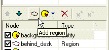
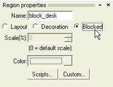
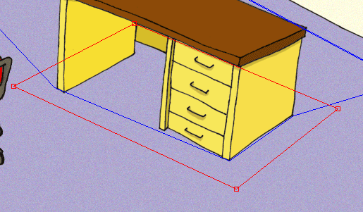
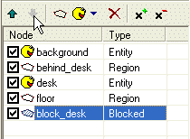

U� jsme si øekli, �e ve scénì mù�e bıt více regionù, a �e regiony ovlivòují poøadí vykreslování scény. To jsou takzvané "layout regiony", tj. regiony, ovlivòující rozlo�ení (layout) scény. Ale existuje ještì jeden typ regionù, blokované regiony. Jak u� název napovídá, blokované regiony vymezují urèitou oblast ve scénì, do které postavy nemohou vstoupit. V naší scénì kupríkladu postava klidnì projde skrz stùl. Pokud tomu chceme zamezit, musíme kolem stolu polo�it blokovanı region.
Tak jdeme na to. Otevøete svou scénu "MyScene.scene" v programu SceneEdit. Ujistìte se, �e v seznamu vrstev máte vybránu vrstvu "main" a kliknìte na tlaèítko "Add region" (Pøidat region). Do scény bude pøidán novı region (stejnı postup u� jsme pou�ili v Kroku 3, vzpomínáte?).

Nyní se podívejme na okno vlastností. Zmìòte jméno regionu na nìco vısti�nìjšího, jako tøeba "block_desk" a potom pøekliknìte rádiové tlaèítko z polohy "Layout" (Rozvr�ení) do polohy "Blocked" (Blokováno).

Dobrá, region je nyní blokován, postavy do nìj nemohou vstoupit. Teï u� staèí jen zmìnit tvar regionu tak, aby se rozprostíral kolem stolu. Zmìòte tvar regionu podle následujícího obrázku:

Tak a je to. Mo�ná se teï obáváte o poøadí prvkù scény, ale vìzte, �e blokované regiony nevlivòují poøadí vykreslování, tak�e je v seznamu prvkù mù�ete posunout prakticky kamkoliv. Nicménì bıvá dobrım zvykem pøesunout všechny na konec seznamu. Není to vy�adováno, ale usnadòuje to vaši orientaci pøi návrhu rozvr�ení scény.
Posuòte region "block_desk" na konec seznamu prvkù pomocí tlaèítka "Node down" (Prvek dolù).

Ulo�te scénu, ukonèete SceneEdit a spus�e hru. Vyberte polo�ku "MyScene" a vyzkoušejte naši novou scénu. Jak vidíte, postava u� nemù�e projít skrz stùl. Ale bohu�el také není schopna stùl obejít. Aby toho schopna byla, k tomu slou�í takzvané navigaèní body. Pokraèujme v kapitole Krok 5: Navigaèní body.